01 - Research tool
The live prototype now runs the real models.
This section now embeds the real HF-RISK inference service: a Flask app hosted separately from the Netlify case-study page, running the final leakage-clean models and generating patient-level SHAP for the 6-month mortality model. It is still research-only - public demonstration, never clinical use.
hf-risk - render service - live inference
Live prototype
Render-hosted Flask app with real model inference
4 outcomes - live SHAP for 6m mortalityThe Netlify page stays the narrative shell. The actual prediction engine now lives in a dedicated Flask service so the public tool uses the same leakage-clean models described elsewhere on this page.
02 · Leakage audit
Higher AUROC isn't better
if it's not honest.
Earlier iterations of the 6-month mortality model reached AUROC 0.819. An audit for administrative, temporal, and post-outcome proxy variables identified leakage — information no clinician would have at discharge. Removing it dropped the internal AUROC to 0.710 and the external MIMIC-IV AUROC to 0.599. That's the number the dissertation reports.
Before strict audit
0.819
6-month mortality · internal AUROC with proxy variables still in play
After strict audit
0.710
6-month mortality · leakage-clean internal AUROC · the dissertation number
| Outcome | Before audit | After audit | Δ | Final model |
|---|---|---|---|---|
| 28-day mortality | 0.893 | 0.781 | −0.112 | Random Forest |
| 3-month mortality | 0.919 | 0.839 | −0.080 | Random Forest |
| 6-month mortality | 0.819 | 0.710 | −0.109 | XGBoost |
| 6-month readmission | 0.648 | 0.650 | +0.002 | XGBoost |
Variables removed by the audit
- Unnamed: 0
- inpatient.number
- dischargeDay
- outcome.during.hospitalization
- readmission & emergency-return timing proxies
03 · Final results
The numbers that
survive scrutiny.
Held-out test AUROC on Zhang after strict leakage and proxy-variable removal. These are the dissertation-safe figures — conservative by design. Model choice per horizon was selected from logistic regression, decision tree, Random Forest, XGBoost, and LightGBM using nested cross-validation on the training split only.
04 · Process
Five weeks, four tracks.
The research followed a linear path from clinical foundations to a reproducible dissertation pipeline. Each phase produced a concrete artefact that fed the next.
Develop
Literature, data audit, preprocessing and feature engineering. MICE imputation for moderately-missing clinical variables; SMOTE strictly inside CV.
Audit
Systematic review of the predictor list for administrative IDs, discharge-timing variables, and post-outcome proxies. Five categories of leakage removed.
Explain
SHAP global and per-patient explanations on the final model. Checked that top drivers are clinically plausible rather than dataset artefacts.
Validate
Zhang-trained models applied directly to MIMIC-IV — no retraining — plus calibration, decision curves, and pre-specified subgroup checks.
01Foundations & literatureFeb 20 – 27
02Exploratory data analysisFeb 28 – Mar 4
03Preprocessing & featuresMar 4 – 8
04Modelling & comparisonMar 9 – 14
05Explainability & toolMar 14 – 18
06Outreach & dissertationMar 18 – 20
05 · Model drivers
What the final model
actually pays attention to.
After removing the audit-flagged variables, SHAP on the final model surfaces clinically meaningful signals rather than artefacts. Discharge-timing variables — which were among the largest contributors in earlier iterations — have been removed and no longer appear here.
01GCS Glasgow Coma Scale — neurological status
02Moderate–severe CKD Renal function comorbidity flag
03Mitral valve AMS Cardiac structure / valve function
04LV end-diastolic diameter Ventricular remodelling
05Liver disease Hepatic comorbidity
06Congestive heart failure Primary diagnosis flag
07Eye opening GCS sub-component
08Reduced EF flag LVEF below 40% clinical threshold
09Basophil ratio Haematological biomarker
10Creatine kinase Cardiac / muscle injury biomarker
What changed after the audit. Earlier versions of this list ranked discharge day among the top contributors. That variable encoded hospital-process timing rather than patient physiology — it was removed. The revised ranking is dominated by neurological status, renal function, cardiac structure, and lab biomarkers, which is consistent with clinical expectation for heart failure prognosis.
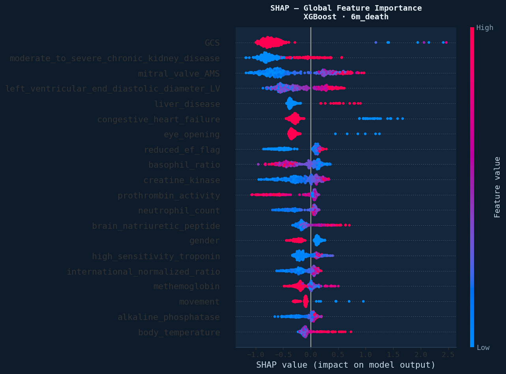
06 · External validation
Transportability to MIMIC-IV.
This is not a MIMIC-only model. The Zhang-trained models were applied directly to 42,990 MIMIC-IV patients without retraining — a strict test of whether the signals generalise to a different hospital system, country, and case-mix. External performance dropped, as expected under dataset shift.
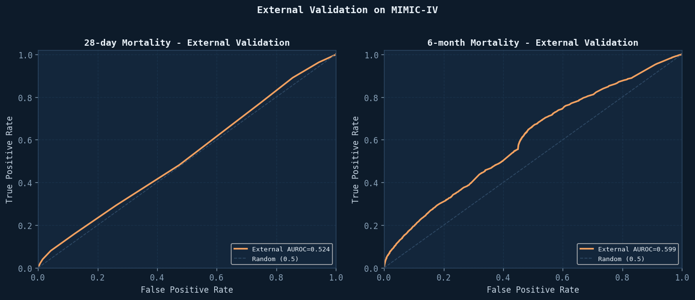
OutcomeInternal (Zhang)External (MIMIC-IV)
28-day mortality
0.781held-out test
0.524direct transfer
6-month mortality
0.710primary outcome
0.599conservative but positive
Transport gap
—
The 28-day result on MIMIC-IV is close to chance — unsurprising given the class-mix and coding differences. The 6-month result retains signal above chance but is substantially lower than internal performance. Reported as a transportability check, not a clinical claim.
07 · Beyond AUROC
Calibration, DCA, and subgroup checks.
AUROC alone is a weak summary for clinical risk. The full evaluation includes calibration reliability, decision-curve analysis (net-benefit across thresholds), and pre-specified subgroup checks by CKD status and gender. Final Brier score for 6-month mortality: 0.027. ECE: 0.023.
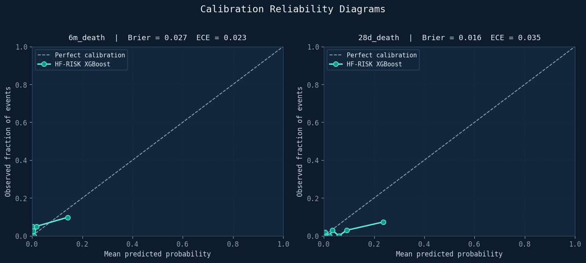
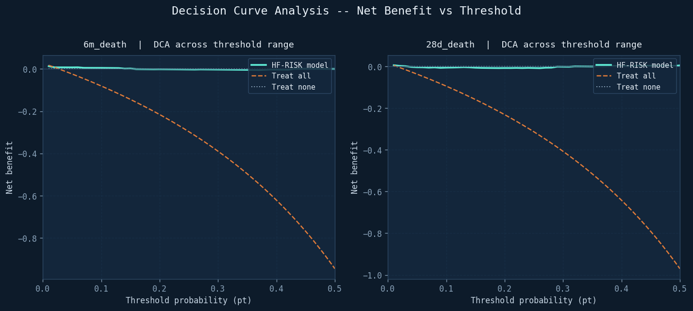
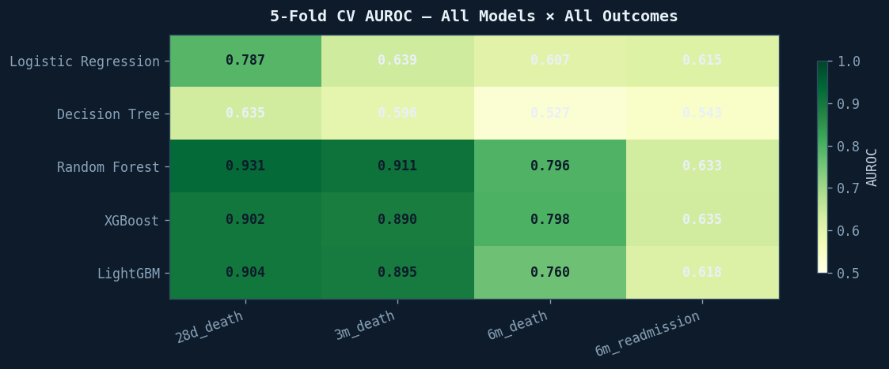
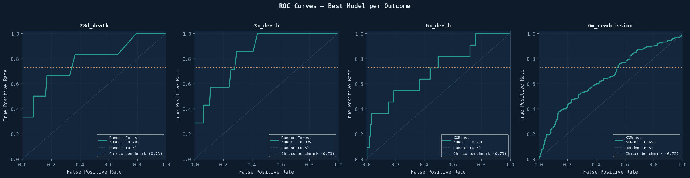
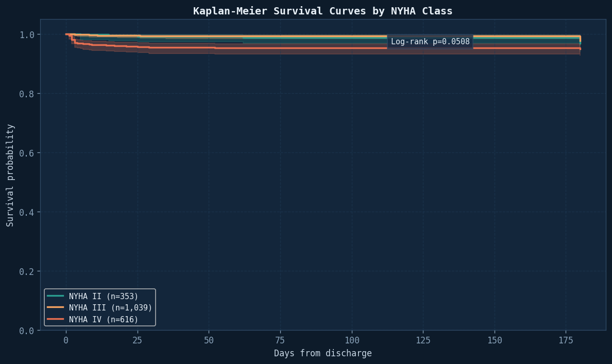
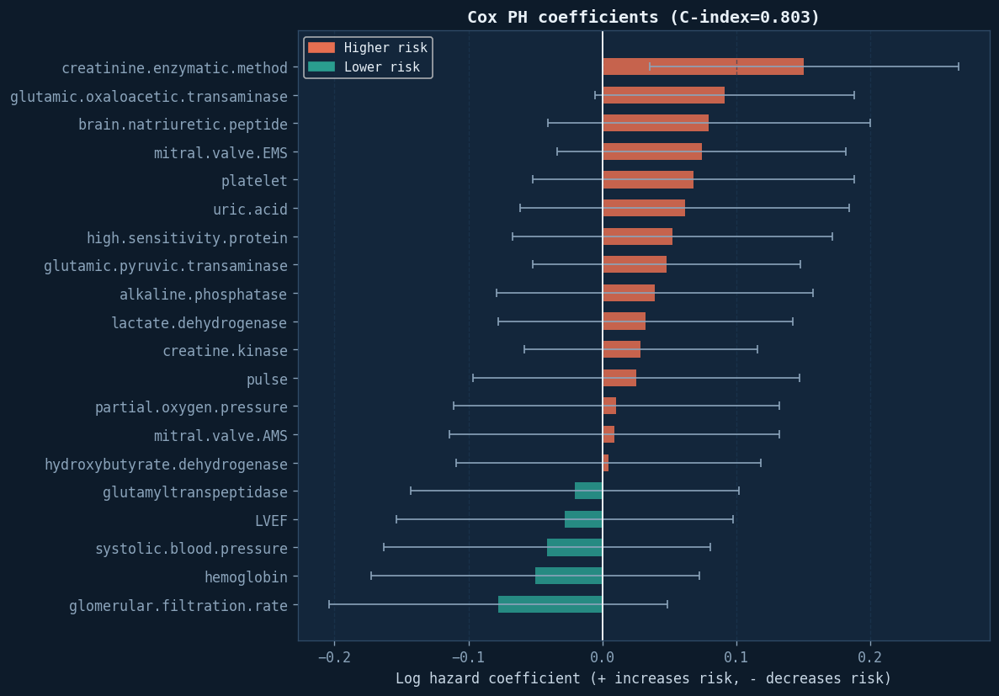
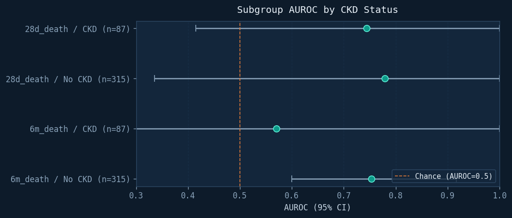
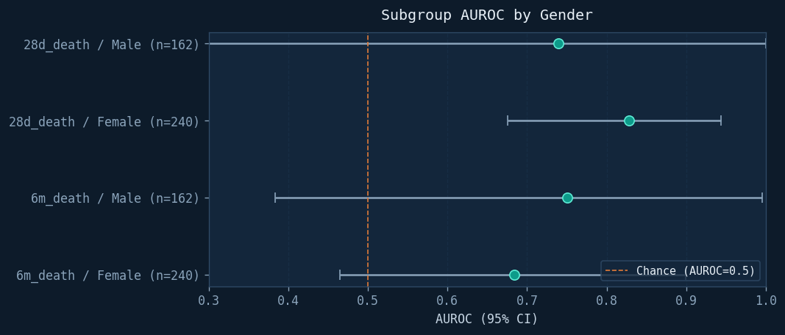
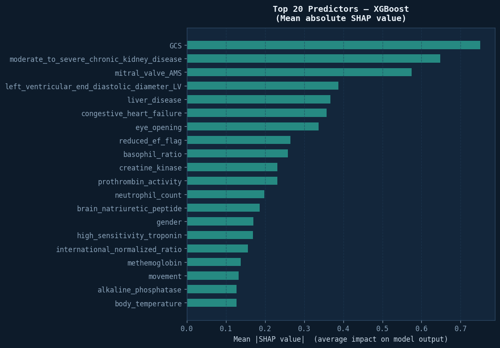
08 · Glossary
Short clinical-ML glossary.
Six terms that recur across the project. Figures are dataset-specific where relevant.
BNP
Brain Natriuretic PeptideA hormone released by the heart muscle under stress or stretch. High levels indicate the heart is struggling to pump effectively — a standard marker of heart-failure severity.
Dataset range 2.7 – 5,000 pg/mL · clinical danger > 400 · dataset mean ≈ 1,280.
LVEF
Left Ventricular Ejection FractionPercentage of blood pumped from the left ventricle per beat. Healthy 55–70 %. Below 40 % is classified as reduced ejection fraction — the heart is too weak.
Missing in 68 % of the dataset — handled with MICE rather than mean imputation.
NYHA
NY Heart Association ClassA four-level severity scale (I–IV). Class I: no limitation. Class IV: symptoms at rest. In this cohort 52 % are Class III, 31 % Class IV — an exceptionally sick sample.
Explains the serious outcome rates and the value of multi-horizon modelling.
AUROC
Area under ROC curveClassification metric. 0.5 is random, 1.0 is perfect. Measures the model's ability to distinguish patients who will and won't experience a bad outcome across all thresholds.
Chicco & Jurman (2020) benchmark: 0.73 · final 6-month result: 0.710.
SHAP
Shapley explanationsGame-theoretic method that credits each feature for its contribution to every individual prediction. Produces global summaries and per-patient waterfall plots.
Used here to show the final model relies on clinically meaningful drivers.
MICE
Multiple imputationStatistical technique that fills missing values using all other variables — far better than mean imputation, which would distort clinical distributions for something like LVEF.
Applied to 42 variables with moderate missingness in the pipeline.
09 · References
Data & citations.
Primary data source, benchmark, and method references used in the dissertation.
01Zhang, Z., Cao, L., Chen, R. et al. (2021). Electronic healthcare records and external outcome data for hospitalised patients with heart failure. Scientific Data 8, 46. doi.org/10.1038/s41597-021-00835-9
02Goldberger et al. (2000). PhysioBank, PhysioToolkit, PhysioNet. Circulation 101(23), e215–e220. doi.org/10.1161/01.CIR.101.23.e215
03Johnson, A. et al. MIMIC-IV. PhysioNet — external validation cohort, used without retraining.
04Chicco, D. & Jurman, G. (2020). Machine learning can predict survival of patients with heart failure. BMC Medical Informatics and Decision Making 20, 16. Baseline AUC ≈ 0.73.
05Lundberg et al. (2020). From local explanations to global understanding. Nature Machine Intelligence — SHAP methodology.